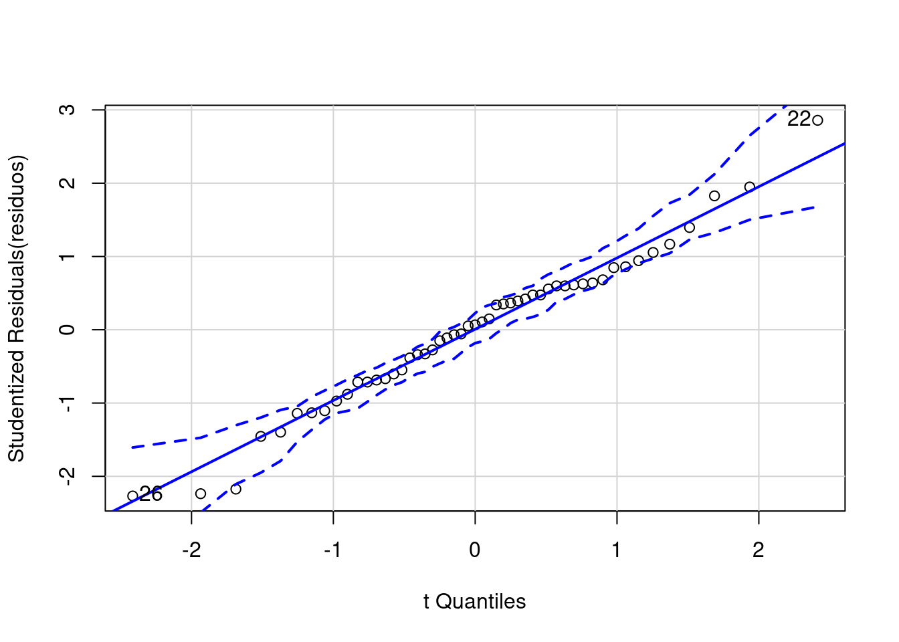
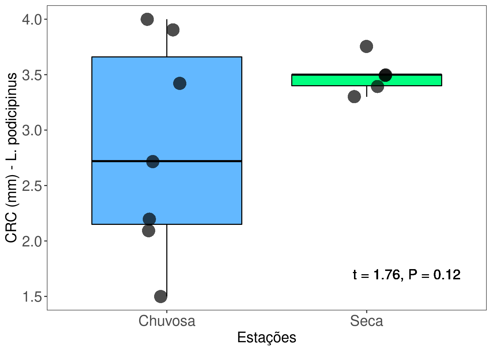

Capítulo 2 Teste T (de Student) para duas amostras independentes
2.1 Backgorund da análise
Uma das perguntas mais comum em estatística é saber se há diferença entre as médias de dois grupos ou tratamentos. Para responder esta pergunta, William Sealy Gosset, químico da cervejaria Guinness, em 1908 desenvolveu o Teste T que é uma estátistica que segue uma distribuição t de Student para rejeitar ou não uma hipótese nula de médias iguais entre os grupos.
\[ t = \frac{(\bar{X}_1 - \bar{X}_2)}{\sqrt{\frac{2S^2_p}{n}}}\]
Onde:
\(\bar{X}\)1 - \(\bar{X}\)2 = diferença entre as médias das duas amostras,
S2p = desvio padrão das amostras,
n = tamanho das amostras.
2.1 Premissas do Teste t :
- As amostras devem ser independentes;
- As unidades amostrais são selecionadas aleatoriamente;
- Distribuição normal (gaussiana) dos resíduos. Observação: Zar (2010, p. 136) indica que o Test T é robusto mesmo com moderada violação da normalidade, principalmente se o tamanho amostral for alto.
- Homogeneidade da variância. Observação. Caso as variâncias não sejam homogêneas, isso deve ser informado na linha de comando, pois o denominador da fórmula acima será corrigido.
2.1.0.1 Exemplo prático 1 - Teste T para duas amostras com variâncias iguais
2.1.0.1.1 Explicação dos dados
Neste exemplo avaliaremos o comprimento rostro-cloacal (CRC em milímetros) de machos de Physalaemus natteri (Anura:Leptodactylidae) amostrados em diferentes estações do ano com armadilhas de interceptação e queda na região noroeste do estado de São Paulo (da Silva & Rossa-Feres 2010).
Pergunta:
O CRC dos machos de P. nattereri é maior na estação chuvosa do que na estação seca?
Predições
O CRC dos machos será maior na estação chuvosa porque há uma vantangem seletiva para os indivíduos maiores durante a atividade reprodutiva.
Variáveis
- Variáveis preditoras
- Dataframe com os indivíduos (unidade amostral) nas linhas e CRC (mm - variável resposta contínua) e estação (variável preditora categórica) como colunas.
Checklist
- Verificar se o seu dataframe está com as unidades amostrais nas linhas e variáveis preditores nas colunas
2.1.1 Análise
Calculo do Teste T para duas amostras independentes com variâncias iguais
## IMPORTANDO OS DADOS
#************************
CRC_PN_macho <- ecodados::teste_t_var_igual
# verificar se o dataframe foi lido corretamente e se não há erros
# Esses comandos são úteis para planilhas grandes
head(CRC_PN_macho) # mostra as seis primeiras linhas da planilha## CRC Estacao
## 1 3.82 Chuvosa
## 2 3.57 Chuvosa
## 3 3.67 Chuvosa
## 4 3.72 Chuvosa
## 5 3.75 Chuvosa
## 6 3.83 Chuvosa## CRC Estacao
## 46 3.16 Seca
## 47 3.48 Seca
## 48 3.48 Seca
## 49 3.49 Seca
## 50 3.51 Seca
## 51 3.30 Seca# TESTE NORMALIDADE
#************************
## Verificando normalidade usando QQ-plot
## Os pontos não podem fugir da reta criando formas como U
residuos <- lm(CRC ~ Estacao, data = CRC_PN_macho)
library("car")
qqPlot(residuos)
## [1] 22 26## Outra possibilidade é usar o teste de Shapiro-Wilk para verificar normalidade
## Hipótese nula que a distribuição é normal
## valor de p < 0.05 significa que os dados não apresentam distribuição normal
## valor de p > 0.05 significa que os dados apresentam distribuição normal
shapiro.test (CRC_PN_macho$CRC) ##
## Shapiro-Wilk normality test
##
## data: CRC_PN_macho$CRC
## W = 0.95559, p-value = 0.05417# TESTE DE HOMOGENEIDADE DA VARIÂNCIA
#***************************************
## Hipótese nula que a variância é homogênea
## valor de p < 0.05 significa que os dados não apresentam homogeneidade
## valor de p > 0.05 significa que os dados apresentam homogeneidade
library(car)
leveneTest(CRC ~ Estacao, data = CRC_PN_macho)## Levene's Test for Homogeneity of Variance (center = median)
## Df F value Pr(>F)
## group 1 1.1677 0.2852
## 49# TESTE T AMOSTRAS INDEPENDENTES E VARIÂNCIAS IGUAIS
#******************************************************888
t.test(CRC ~ Estacao, data = CRC_PN_macho, var.equal = TRUE)##
## Two Sample t-test
##
## data: CRC by Estacao
## t = 4.1524, df = 49, p-value = 0.000131
## alternative hypothesis: true difference in means is not equal to 0
## 95 percent confidence interval:
## 0.2242132 0.6447619
## sample estimates:
## mean in group Chuvosa mean in group Seca
## 3.695357 3.260870Visualizar os resultados em gráfico
library(ggplot2)
ggplot(data = CRC_PN_macho, aes(x= Estacao, y= CRC, color = Estacao)) +
labs(x = "Estações", y = "CRC (mm) - P. nattereri", size = 15) +
geom_boxplot(fill=c("steelblue1", "springgreen1"), color="black", outlier.shape = NA) +
geom_jitter(shape = 16, position=position_jitter(0.2), cex = 7, alpha = 0.7) +
scale_color_manual(values = c("steelblue1", "springgreen1")) +
geom_text(x = 2.2, y = 4.6, label = "t = 4.15, P < 0.001", color = "black", size = 5) +
theme_bw() +
theme(axis.text.y = element_text(size = 15), axis.text.x = element_text(size = 15)) +
theme(axis.title.y = element_text(size = 15), axis.title.x = element_text(size = 15)) +
theme(panel.grid.major = element_blank(), panel.grid.minor = element_blank()) +
theme(legend.position = "none")
Interpretação dos resultados
Neste exemplo, rejeitamos a hipótese nula que as médias do CRC dos machos entre as estações seca e chuvosa são iguais (t = 4,15, P < 0,001). Os resultados mostram que os machos de P. nattereri coletados na estação chuvosa foram em média 0,43mm maiores do que os coletados na estação seca.
2.1.1.1 Exemplo prático 2 - Teste T para duas amostras independentes com variâncias diferentes
2.1.1.1.1 Explicação dos dados
Neste exemplo, avaliaremos o comprimento rostro-cloacal (CRC - milímetros) de fêmeas de Leptodactylus podicipinus amostradas em diferentes estações do ano com armadilhas de interceptação e queda na região noroeste do estado de São Paulo (da Silva & Rossa-Feres 2010). Observação: Os dados foram alterados em relação a publicação original para se enquadrarem no exemplo de amostras com variâncias diferentes.
Pergunta:
O CRC das fêmeas de L. podicipinus é maior na estação chuvosa do que na estação seca?
Predições
O CRC das fêmeas será maior na estação chuvosa porque há uma vantangem seletiva para os indivíduos maiores durante a atividade reprodutiva.
Variáveis
- Variáveis preditoras
- Dataframe com os indivíduos (unidade amostral) nas linhas e CRC (mm - variável resposta contínua) e estação (variável preditora categórica) como colunas.
Checklist
- Verificar se o seu dataframe está com as unidades amostrais nas linhas e variáveis preditores nas colunas
2.1.2 Análise
Calculo do Teste T para duas amostras com variâncias diferentes
## IMPORTANDO OS DADOS
#*************************
CRC_LP_femea <- ecodados::teste_t_var_diferente
head(CRC_LP_femea) # verificar se o dataframe foi lido corretamente## CRC Estacao
## 1 2.72 Chuvosa
## 2 2.10 Chuvosa
## 3 3.42 Chuvosa
## 4 1.50 Chuvosa
## 5 3.90 Chuvosa
## 6 4.00 Chuvosa# TESTE NORMALIDADE
#************************
## Verificando normalidade usando QQ-plot
## Os pontos não podem fugir da reta criando formas como U
residuos_LP <- lm(CRC ~ Estacao, data = CRC_LP_femea)
library("car")
qqPlot(residuos_LP)
## [1] 4 6## Outra possibilidade é usar o teste de Shapiro-Wilk para verificar normalidade
## Hipótese nula que a distribuição é normal
## valor de p < 0.05 significa que os dados não apresentam distribuição normal
## valor de p > 0.05 significa que os dados apresentam distribuição normal
shapiro.test (CRC_LP_femea$CRC) ##
## Shapiro-Wilk normality test
##
## data: CRC_LP_femea$CRC
## W = 0.88195, p-value = 0.09284# TESTE DE HOMOGENEIDADE DA VARIÂNCIA
#***************************************
## Hipótese nula que a variância é homogênea
## valor de p < 0.05 significa que os dados não apresentam homogeneidade
## valor de p > 0.05 significa que os dados apresentam homogeneidade
library(car)
leveneTest(CRC ~ Estacao, data = CRC_LP_femea)## Levene's Test for Homogeneity of Variance (center = median)
## Df F value Pr(>F)
## group 1 9.8527 0.01053 *
## 10
## ---
## Signif. codes: 0 '***' 0.001 '**' 0.01 '*' 0.05 '.' 0.1 ' ' 1# TESTE T COM AMOSTRAS INDEPENDENTES E VARIÂNCIS DIFERENTES
#***********************************************************
## Com base no teste de Levene, avise na linha de comando que as variâncias
## não são iguais (var.equal = FALSE).
t.test(CRC ~ Estacao, data = CRC_LP_femea, var.equal = FALSE)##
## Welch Two Sample t-test
##
## data: CRC by Estacao
## t = -1.7633, df = 6.4998, p-value = 0.1245
## alternative hypothesis: true difference in means is not equal to 0
## 95 percent confidence interval:
## -1.5489301 0.2375016
## sample estimates:
## mean in group Chuvosa mean in group Seca
## 2.834286 3.490000Visualizar os resultados em gráfico
library(ggplot2)
ggplot(data = CRC_LP_femea, aes(x= Estacao, y= CRC, color = Estacao)) +
labs(x = "Estações", y = "CRC (mm) - L. podicipinus", size = 15) +
geom_boxplot(fill=c("steelblue1", "springgreen1"), color="black", outlier.shape = NA) +
geom_jitter(shape = 16, position=position_jitter(0.2), cex = 7, alpha = 0.7) +
scale_color_manual(values = c("steelblue1", "springgreen1")) +
geom_text(x = 2.2, y = 1.7, label = "t = 1.76, P = 0.12", color = "black", size = 5) +
theme_bw() +
theme(axis.text.y = element_text(size = 15), axis.text.x = element_text(size = 15)) +
theme(axis.title.y = element_text(size = 15), axis.title.x = element_text(size = 15)) +
theme(panel.grid.major = element_blank(), panel.grid.minor = element_blank()) +
theme(legend.position = "none")
Interpretação dos resultados
Neste exemplo, não rejeitamos a hipótese nula e consideramos que as médias do CRC das fêmeas entre as estações seca e chuvosa são iguais (t = 1,76, P = 0,12). Os resultados mostram que as fêmeas de L. podicipinus coletadas na estação chuvosa não são maiores do que as fêmeas coletadas na estação seca.